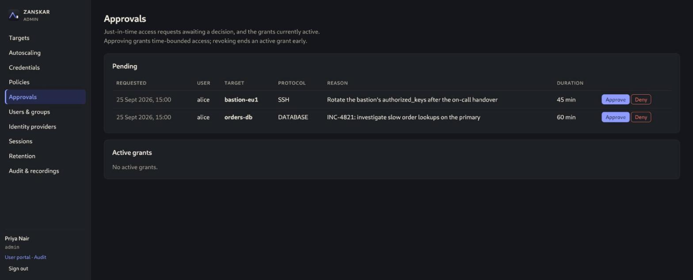

RELEASE NOTES
Zanskar v1.0.0
Latest release, 25 September 2026
The first stable release. Zanskar reached it after two release candidates: rc.1 caught a signing break in the release pipeline before anything was published, and rc.2 passed pipeline verification and a clean-machine install test on both documented paths.
- Sessions: SSH and WinRM terminals, RDP and VNC desktops through guacd, PostgreSQL through a credential-isolating proxy sidecar, SFTP file transfer beside the terminal.
- Access control: users, groups and three roles; local accounts with Argon2id and mandatory TOTP, or OIDC and LDAP/AD; tag-based policies with time windows, session limits and clipboard/file switches; host-key and certificate pinning with admin approval.
- Just-in-time access: approval-required policies, time-boxed grants, an Approvals queue, automatic expiry, full audit trail.
- Autoscaling: AWS Auto Scaling groups via a cross-account role and EC2 Instance Connect, with failover when an instance disappears.
- Audit: recorded sessions with command-seek playback, live shadowing and terminate, hash-chained audit log with
verify, SIEM export, recording retention. - Operations:
zanskar init, hardened systemd unit in deb/rpm packages, Docker Compose stack with Caddy TLS,backupandrestore. - Supply chain: every artifact checksummed and keyless-signed with Sigstore, multi-arch image on ghcr.io, pinned CI, OpenSSF Scorecard and Best Practices badges, CodeQL clean.

Known limitations in 1.0
- Single instance only. More than one replica breaks cross-pod admin terminate and auditor shadowing; the Helm chart is a preview until that control channel lands.
- Database access supports PostgreSQL. MySQL and MariaDB through ProxySQL are next.
- Database sessions need Docker or Podman on the gateway host and are not available inside the Compose stack.
- No SAML, SCIM, WebAuthn or automatic credential rotation yet.
What comes next
Phase 4: the cross-pod control channel that unlocks high availability and makes the Helm chart a supported path, MySQL via ProxySQL, SAML and SCIM, WebAuthn, delegated and multi-step approvers, access reviews, credential rotation, and GCP and Azure scale sets. Follow the roadmap.
Upgrading from a release candidate: 1.0.0-rc.1 and rc.2 share the schema with 1.0.0. Install the new package, or set ZANSKAR_VERSION=1.0.0 and pull; migrations are a no-op.